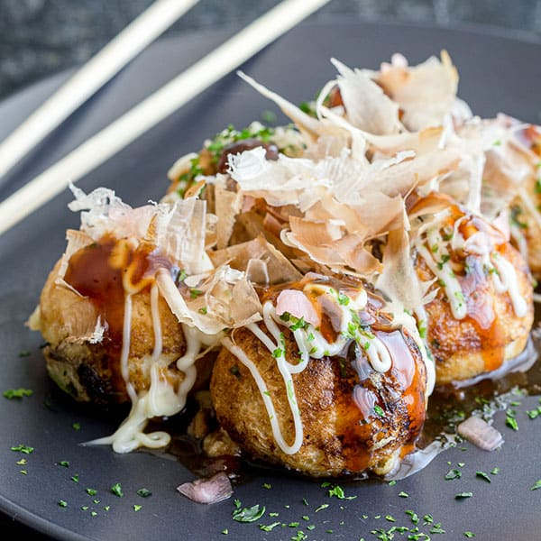

Takoyaki

Takoyaki is a ball-shaped Japanese snack made of a wheat flour-based batter and cooked in a special molded pan. It is typically filled with minced or diced octopus, tempura scraps, pickled ginger, and green onion.
Ingredients:
Steps:
- Create the batter
- Heat some oil
- Add octopus and batter
- Add some flavour
- Cook then flip
- Achieve an even colour
- Serve with toppings